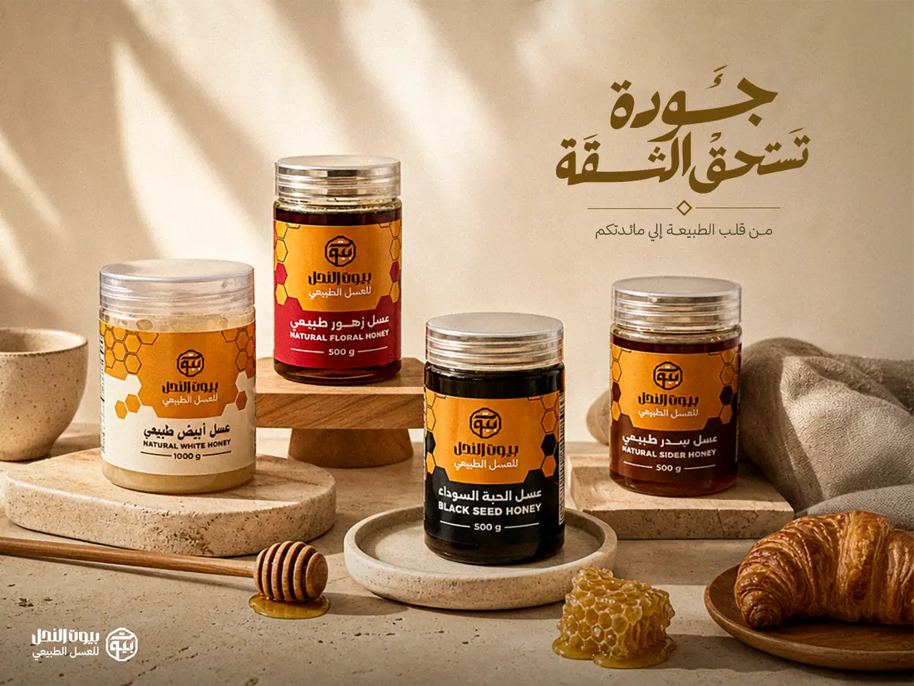
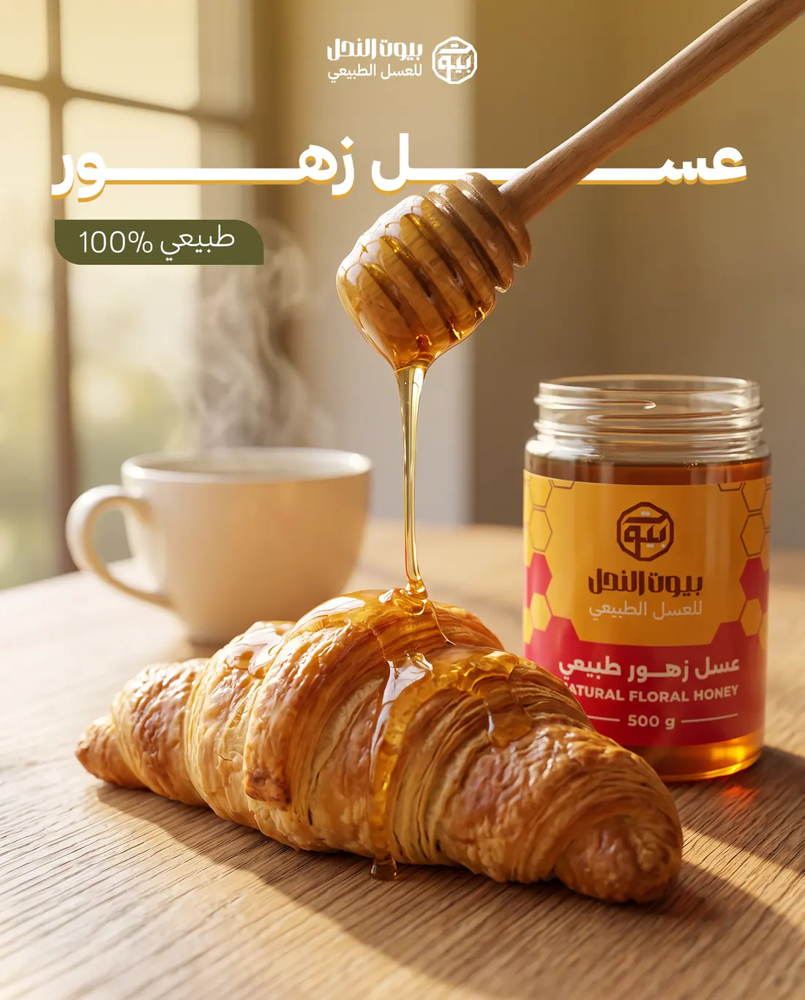
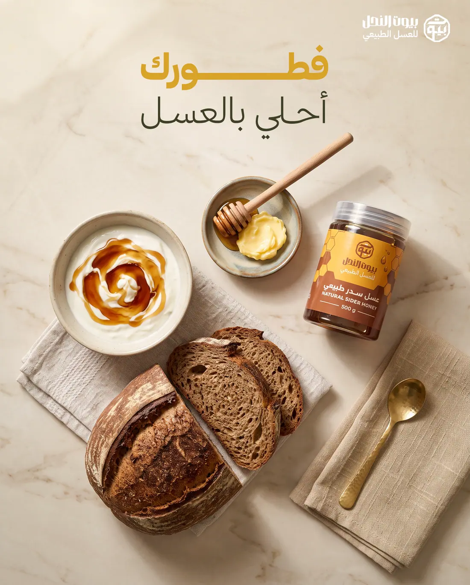
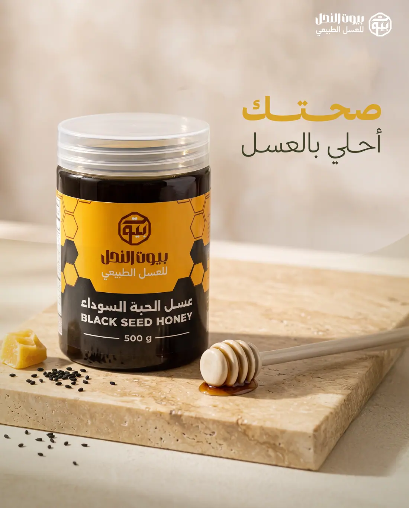
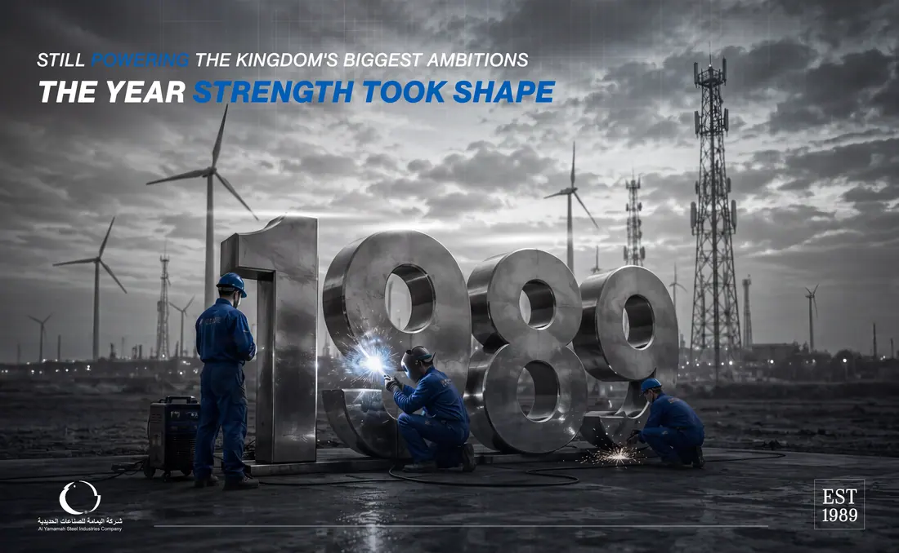
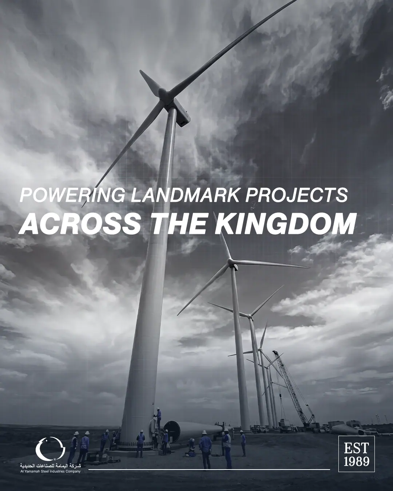
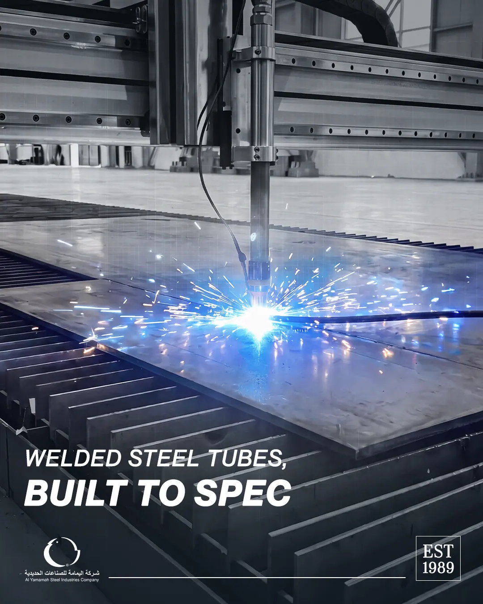
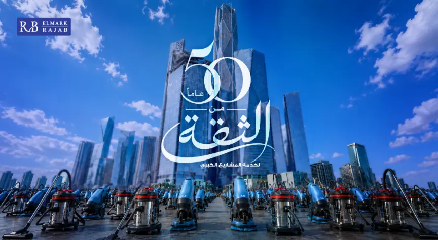

01
Creative Direction
I set one clear quality level for everything we send out. It covers branding, campaigns, social and digital, in Arabic and English.
Better creative work, a stronger team, AI inside production, and new skills the company can sell.
My job description asks for six things: set the creative vision, build the team, control quality, join client pitches, help the company grow, and improve the process. This page reports on those six points.
I run the creative side from start to finish. I set the quality level, direct the work, train the designers, and build the systems that keep quality high when the volume goes up. In short: better work, a stronger team, and less time between a brief and a finished asset.
I set one clear quality level for everything we send out. It covers branding, campaigns, social and digital, in Arabic and English.
I trained each designer one by one. I found the gap, gave them the tools, and reviewed the work against a written standard, not personal taste. I also hired and onboarded three new designers.
I built a clear approval path. We catch problems inside the team, before the client sees them. Less rework, safer deadlines.
I joined pitches and client meetings. I explain design choices in business words, not design words.
I helped the company grow. New ideas for pitches, sales material, and new services the company can now sell.
I built the workflows, the AI tools and the reusable systems. One good result can now be repeated.
Every number here is counted from work that was actually delivered. You can open the files and check any of them.
Schools, real estate, food, industry and B2B. The full account list is in section 03.
Each pair shows the old post next to the new one. Nothing here is only a claim.
AI images, AI voice over, in house web building, campaign systems, automation, better workflow, and a process ready for new tools.
Eight real websites made inside the design team. No outside developer, no extra quote.
Five designers trained one by one. Three new people hired and onboarded with your support.
Nofodh Real Estate, Keystone, HR Link and HR Path. I gave creative direction and pitch material for all four.
Twelve accounts. The same clients, the same team, the same budget. The top row is the old work. The bottom row is the new work. Click any image to see it bigger.
Video moved up as well. I now direct video from a storyboard, so the idea is agreed before we spend edit time. Press play on any video. Click it to watch it bigger with sound.
I planned the cut with a storyboard first. I fixed the pace, the colour and the text timing. The message now lands in the first three seconds.
The old cut was long and slow. I cut it down, kept one clear idea, and made the type sit with the music. It is now half the length and says more.
Alice made these two with AI tools that were not used in this company in April. Scenes, motion and voice over are all produced in house. No shoot, no studio, no voice talent booking.
A team lead is not only a reviewer. When a job needed a level the team could not reach yet, I produced it myself. That protected the quality for the client and kept the pressure off people who were still learning.
Some briefs needed a level the team was not at yet. I made those myself, so the client still got the standard we promised.
Learning and delivering at the same time is a lot to ask. I carried the hardest jobs while the team learned, instead of pushing them into longer hours.
I test every new method on real client work first. I only ask the team to use it after I know it works and I can teach it.
Before, every post was a new design decision. Now we start from one key visual and build the rest from it. The look holds across the whole campaign, and the team works much faster.




Warm daylight, the same props and one Arabic type style. Every post looks like the same brand without checking a guideline.



Grey scenes with one blue accent, and the same bold type in every frame. The projects change, the look does not.

The Arabic number is drawn as part of the headline, not placed next to it. The product line builds the road into the city.
A deck is not a document. It is the first product the client sees, so I treat it as art direction: one idea per slide, a real cover, controlled type, and images that carry the argument. These six are live. Open any of them.
In a pitch, the client is not buying a deck. They are buying proof that we can do the work. On four pitches I gave that proof directly. On three of them I built a full website they could open in a browser.
I set the creative direction and the visual position before the money talk. The client saw what we can do, not what we say we can do.
I built and published a full front end: home, projects and contact. The client did not review an idea. They opened a working site with their own brand on it.
An Arabic first redesign with the client's own words kept exactly as they were. Only one thing changed: the quality of the execution. That made the comparison very easy to see.
A bilingual landing page with clear service packages and a lead form. The pitch moved from "we can design this" to "here is the working page".
These are not small improvements inside an old service. They are new things the company can now do, sell and teach to the next hire.
A clear plan for where AI tools enter the work: ideas, images, retouch and variations. Each step has a quality check, so speed never costs quality.
I take a design straight to a live website. No development ticket and no outside quote. Eight client websites were made this way in 97 days.
We build a campaign as a system, not as single posts. One Arabic and English type style holds across the whole campaign. See section 05.
Repeat work such as resizes, language versions and template rollout no longer sits with the designers. Senior time goes to thinking, not to clicking.
A clear path from brief to concept to review to approval, with a named owner at each step. The client sees a decision, not a draft.
The process does not depend on one tool. When a new tool arrives, it drops into the same frame. We adopt it in days, not in months.
We now write, make and direct voice over in house with AI, in Arabic and in English. Before, a video waited for a studio booking. Now it is finished the same day, and the second language version costs one more run instead of one more booking.
In April, AI was something the team had heard of. Today it is part of the production line. We use it on purpose, we check it against a standard, and the output goes to clients.
I looked at each designer's live work and found the one thing holding them back. Ideas, speed, finish or consistency. The training was for that one thing.
No practice files. Every new method was used on a live brief the designer already owned. The value was clear on the same day.
I said clearly where AI output is ready to publish, where it is only a reference, and where we do not use it. This is why speed went up and quality did not go down.
Feedback points to a written rule, not to my personal taste. Designers can check their own work before they send it.
I reduced my review step as each designer got stronger. The goal was never for them to need me. The goal is designers who hold the standard themselves.
Team skill belongs to the company, not to me. Each card shows what the designer could do in April, what they can do now, and what that changes day to day. Where the change was small, I say so.
Hiring and onboarding new design talent is written in my job description. It could not have happened without your support in approving the headcount. It is the clearest example this quarter of management and the creative team moving together.
Extra hands at the lowest cost. She takes the simple production work that used to sit with senior designers.
Delivery on template based accounts. The campaign systems let a junior reach the senior level of finish.
He works alone on harder briefs. He adds a second review layer under me, so work does not wait for one person.
Why this mix matters: one intern, one junior and one mid level, not three people at the same level. This keeps the cost low, gives each person a clear path to grow, and means the written standard makes them productive, not my time.
Each one is a real website, published and live. All of them were made inside the design team, with no outside developer and no engineering ticket. You can open any of them right now.
An Arabic first redesign. We kept every word of the client's own copy, so only the quality changed.
Open live siteA landing page in two languages with clear service packages and a lead form. A selling page, not a brochure.
Open live siteA luxury landing page in two languages, with a dark and a light theme and the full masterplan story.
Open live siteHome, projects and contact pages, built and published as proof during the pitch.
Open live siteA single page site in two languages for a luxury community, built on a gold and dark brand system.
Open live siteA landing page for a commercial tower in Riyadh, with the leasing offer, the floor mix and the investment case.
Open live siteA full site in two languages for Dallah's real estate arm. Twenty pages, built around lead forms and the flagship project.
Open live siteA single page site in two languages for a Refad development, built on a burgundy brand system.
Open live siteThe results above did not come for free. This part is honest about the effort behind them and about the things that are still not solved.
I joined a team that was new to me, in a company that is large. To learn the accounts, review every piece of work and still push the new systems, I worked many late nights. That was the only way to move this fast in 97 days.
This is not a complaint. It is the real cost of the change, and it is not something I can keep at this level forever without more structure.
I was asked to hold one to one meetings with every team. I started them, but the day is full of client meetings and delivery, and each session runs long. The result is that this is taking much longer than planned.
This is a real problem, not a small one. To fix it I need protected time in the calendar for these meetings, agreed with you.
Not everyone wanted to change how they work. This is normal when a system changes, but it slowed some parts down, mostly in motion. It is the reason one part of the team moved less than the rest.
Encouragement alone did not fix it. A short adoption plan with your backing would.
A working document on how we can improve the flow of work between the teams. It is a draft and it still needs your review.
Needs review yetIn 90 days the design team went from a delivery cost to a source of skill, speed and new business.